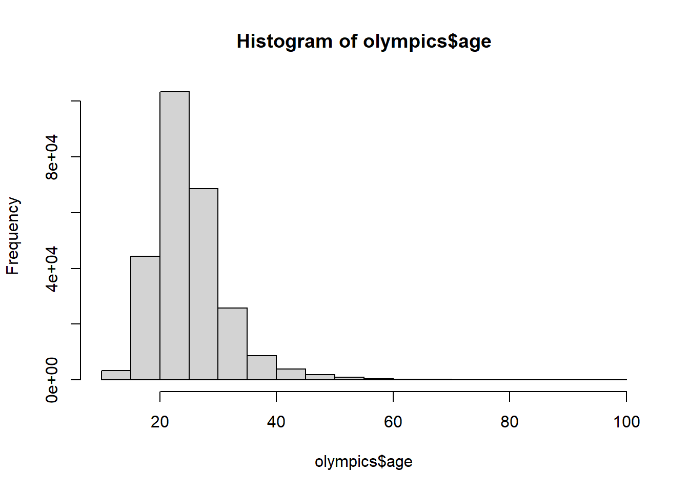

Rows: 271116 Columns: 15
── Column specification ────────────────────────────────────────────────────────
Delimiter: ","
chr (10): name, sex, team, noc, games, season, city, sport, event, medal
dbl (5): id, age, height, weight, year
ℹ Use `spec()` to retrieve the full column specification for this data.
ℹ Specify the column types or set `show_col_types = FALSE` to quiet this message.
#adding associated packages#library(tidyverse)
Warning: package 'tibble' was built under R version 4.2.3
Warning: package 'dplyr' was built under R version 4.2.3
── Attaching core tidyverse packages ──────────────────────── tidyverse 2.0.0 ──
✔ dplyr 1.1.3 ✔ readr 2.1.4
✔ forcats 1.0.0 ✔ stringr 1.5.0
✔ ggplot2 3.4.1 ✔ tibble 3.2.1
✔ lubridate 1.9.2 ✔ tidyr 1.3.0
✔ purrr 1.0.1
── Conflicts ────────────────────────────────────────── tidyverse_conflicts() ──
✖ dplyr::filter() masks stats::filter()
✖ dplyr::lag() masks stats::lag()
ℹ Use the conflicted package (<http://conflicted.r-lib.org/>) to force all conflicts to become errors
library(gtsummary)library(broom)
This data this comes from the RGriffin Kaggle dataset which is basic bio data on athletes and medal results from Athens 1896 to Rio 2016.
#creating a table using gtsummary##| label: tbl-descr#| tbl-cap: "Descriptive Statistics"tbl_summary( olympics,by = year,include =c(year, weight, height ))
Characteristic
1896
N = 380
1
1900
N = 1,936
1
1904
N = 1,301
1
1906
N = 1,733
1
1908
N = 3,101
1
1912
N = 4,040
1
1920
N = 4,292
1
1924
N = 5,693
1
1928
N = 5,574
1
1932
N = 3,321
1
1936
N = 7,401
1
1948
N = 7,480
1
1952
N = 9,358
1
1956
N = 6,434
1
1960
N = 9,235
1
1964
N = 9,480
1
1968
N = 10,479
1
1972
N = 11,959
1
1976
N = 10,502
1
1980
N = 8,937
1
1984
N = 11,588
1
1988
N = 14,676
1
1992
N = 16,413
1
1994
N = 3,160
1
1996
N = 13,780
1
1998
N = 3,605
1
2000
N = 13,821
1
2002
N = 4,109
1
2004
N = 13,443
1
2006
N = 4,382
1
2008
N = 13,602
1
2010
N = 4,402
1
2012
N = 12,920
1
2014
N = 4,891
1
2016
N = 13,688
1
weight
70 (62, 73)
74 (64, 86)
71 (61, 77)
77 (67, 82)
75 (66, 81)
71 (65, 80)
71 (64, 80)
70 (64, 77)
70 (64, 77)
70 (63, 77)
71 (63, 78)
71 (64, 78)
68 (61, 77)
70 (62, 77)
68 (61, 76)
69 (61, 77)
69 (61, 77)
70 (61, 78)
70 (60, 78)
70 (61, 79)
70 (61, 79)
70 (60, 79)
70 (61, 80)
70 (61, 80)
70 (60, 80)
70 (61, 80)
70 (60, 80)
69 (61, 80)
70 (60, 80)
69 (61, 79)
70 (60, 80)
70 (60, 80)
69 (60, 80)
70 (60, 80)
69 (60, 80)
Unknown
331
1,857
1,154
1,528
2,618
3,444
3,821
5,003
4,856
2,771
6,414
6,329
7,171
3,754
1,048
708
169
389
920
596
603
928
3,157
189
1,821
86
126
47
37
16
159
24
360
218
223
height
174 (159, 183)
178 (169, 183)
176 (170, 181)
178 (173, 184)
178 (172, 183)
178 (172, 183)
175 (170, 182)
175 (170, 180)
175 (170, 180)
173 (168, 180)
176 (169, 182)
176 (170, 182)
174 (168, 181)
174 (167, 181)
173 (167, 180)
173 (167, 180)
174 (168, 180)
175 (168, 181)
175 (168, 182)
176 (169, 183)
176 (168, 183)
176 (168, 183)
176 (169, 183)
176 (170, 181)
176 (168, 184)
175 (168, 181)
176 (168, 184)
175 (168, 181)
176 (168, 184)
175 (168, 181)
176 (168, 184)
175 (168, 182)
176 (168, 184)
175 (168, 182)
175 (168, 184)
Unknown
334
1,820
1,088
1,476
2,626
3,319
3,525
4,719
4,599
2,108
6,209
6,311
7,170
3,748
961
681
153
301
876
588
598
933
3,175
187
1,871
84
123
29
36
6
151
2
168
20
176
1
Median (Q1, Q3)
# fit a univariate regression##| label: tbl-reg#| tbl-cap: "Univariate Regression of year on other variables"tbl_uvregression( olympics,y = year,include =c( medal,weight,height ),method = lm )
Characteristic
N
Beta
95% CI
1
p-value
medal
39,783
Bronze
—
—
Gold
-2.1
-2.9, -1.2
<0.001
Silver
-1.7
-2.5, -0.86
<0.001
weight
208,241
0.03
0.02, 0.03
<0.001
height
210,945
0.10
0.09, 0.10
<0.001
1
CI = Confidence Interval
#create a figure#| label: fig-hist#| fig-cap: "Histogram of Athlete's Ages"hist(olympics$age)

@tbl-descr contains a table and @fig-hist a histogram.
::: {.cell}
```{.r .cell-code}
stats <- list(n = nrow(olympics),
mean_height = mean(olympics$height, na.rm = TRUE))
print(stats)